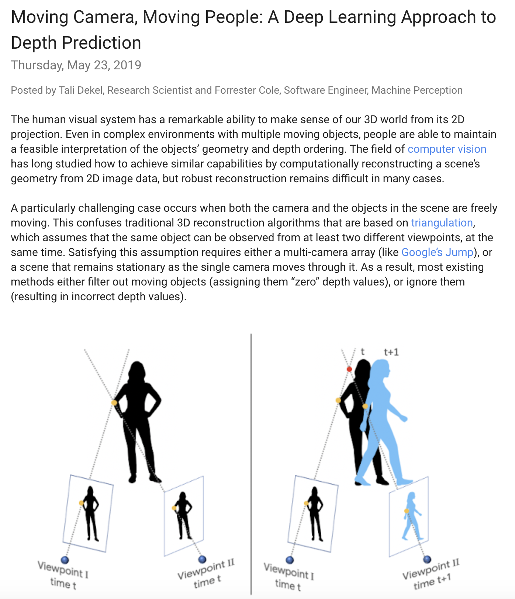

Learning the Depths of Moving People by Watching Frozen People
| Zhengqi Li | Tali Dekel | Forrester Cole | Richard Tucker | Noah Snavely | Ce Liu | William T. Freeman |
| Google Research |
 |
Our model predicts dense depth when both an ordinary camera and people in the scene are freely moving (right). We train our model on our new MannequinChallenge dataset—a collection of Internet videos of people imitating mannequins, i.e., freezing in diverse, natural poses, while a camera tours the scene (left). Because people are stationary, geometric constraints hold; this allows us to use multi-view stereo to estimate depth which serves as supervision during training |
| MannequinChallenge dataset is now available! |
Abstract
We present a method for predicting dense depth in scenarios where both a monocular camera and people in the scene are freely moving. Existing methods for recovering depth for dynamic, non-rigid objects from monocular video impose strong assumptions on the objects’ motion and may only recover sparse depth. In this paper, we take a data-driven approach and learn human depth priors from a new source of data: thousands of Internet videos of people imitating mannequins, i.e., freezing in diverse, natural poses, while a hand-held camera tours the scene. Since the people are stationary, training data can be created from these videos using multi-view stereo reconstruction. At inference time, our method uses motion parallax cues from the static areas of the scenes, and shows clear improvement over state-of-the-art monocular depth prediction methods. We demonstrate our method on real-world sequences of complex human actions captured by a moving hand-held camera, and show various 3D effects produced using our predicted depth.
Paper
 |
"Learning the Depths of Moving People by Watching Frozen People", [Arxiv][CVF] |
|  |
"Moving Camera, Moving People: A Deep Learning Approach to Depth Prediction" [Link]
|
Supplementary Material
 |
Models and Dataset
Our MannequinChallenge is available here: |
|
 |
Our models trained on our Mannequin Challenge dataset (both monocular and 2-frame models) are availble here. |
Acknowledgements. We would like to thank Xiuming Zhang for his help in producing the human mesh results.
Last updated: April 2018